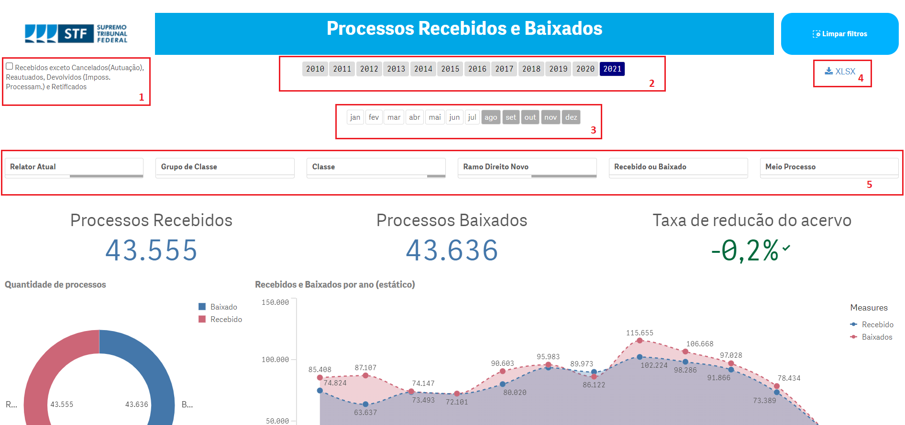

Capítulo 6 Recebimento
Recebimento de processos
O processamento inicial começa com o recebimento e a autuação do processo. Consideram-se processos recebidos os ajuizados diretamente no STF, denominados “originários,” e também aqueles provenientes de outros juízos ou tribunais, chamados “recursais.”
Do total de processos recebidos, parte tem seguimento obstado pela Presidência, por atribuição regimental (arts. 13, V, “c” e “d”; 327, caput; e 328, parágrafo único, do RISTF):
recursos que não preenchem requisitos formais de admissibilidade;
que tratam de temas com repercussão geral já apreciada pelo STF;
prejudicados em razão de decisão do STJ em recurso especial ou agravo interposto no mesmo processo.
Outra parte é registrada à Presidência (arts. 13, V, d, e XV; 70, § 4°; 278; 297; 351 e 354-A, do RISTF):
- habeas corpus em que seja manifesta a incompetência do tribunal para apreciação do pedido;
- feitos das classes Arguição de Suspeição (AS), Intervenção Federal (IF), Proposta de Súmula Vinculante (PSV), Suspensão de Liminar (SL), Suspensão de Segurança (SS) e Suspensão de Tutela Antecipada (STA).
Os processos que não se enquadram nas hipóteses anteriores são objeto de distribuição, livre ou por prevenção, aos Ministros do Supremo, excetuado o Presidente.
6.1 Regra de Recebimento
Os dados disponibilizados no painel utilizam como referência o campo data de primeiro ingresso do processo no STF independente do lançamento dos andamentos “protocolado” ou “autuado.” Neste painel estão contabilizados inclusive processos que não seguiram trâmite de fato no STF, como por exemplo: processos com cancelamento de autuação, reautuados, retificados ou devolvidos por impossibilidade de processamento. No painel, há um filtro para exclusão automática destes casos. Contudo petições avulsas ou incidentais que não são convertidas em processo, não são contabilizadas no recebimento. Para mais informações, ver aqui.
6.2 Painel de Recebimento
O objetivo é apresentar as principais dimensões do painel de recebimento disponibilizado no Portal STF.

6.2.1 Taxonomia do painel
O painel de acervo possui 9 filtros, além da possibilidade de utilizar gráficos e tabelas para outras seleções.
1 - É possível excluir do total de processos recebidos, aqueles que não tiveram tramitação de fato no STF: com cancelamento de autuação, reautuados, devolvidos por impossibilidade de processamento ou retificados. Para excluí-los, basta selecionar a caixa no canto superior esquerdo do painel;
2 - É possível selecionar um ou mais anos de recebimento;
3 - É possível filtrar um ou mais meses para verificar o quantitativo de processos recebidos;
4 - O painel permite que a lista com todos os dados sejam baixadas num link no canto superior direito no formato .xlsx ou .csv;
5 - É ainda possível filtrar grupos de processos, conforme dimensões abaixo descritas.
Tabela